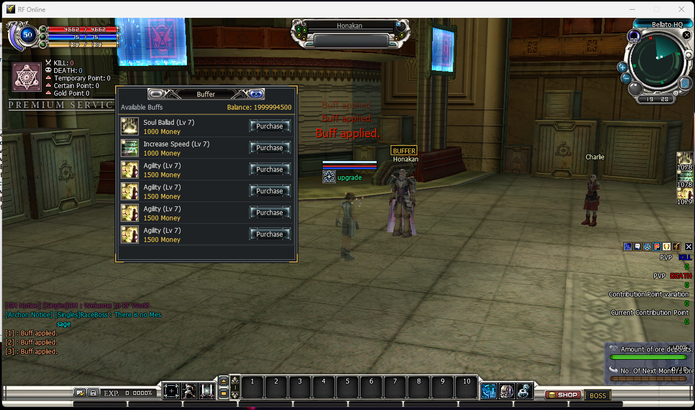

NPC Buffer
NPC Buffer

What it does — and why you would use it
Stock RF Online has no way to sell a player a temporary self-buff from an NPC — buffs only come from spells another player casts. The NPC Buffer module turns any designated store NPC into a buff vendor: a player talks to it, opens the Buffer window, and buys the effects you have listed for a dalant price. The granted buff behaves exactly like a normally-cast one (same duration, same stacking rules), because it rides the engine's own assist-cast path.
- A named, glowing NPC. A buffer NPC shows a gold BUFFER nameplate floating above its name and a light aura around it, so players can spot it across the square without clicking anything — the same “status light” treatment a race leader gets. See The BUFFER badge & light.
- A Buffer window. Clicking the NPC opens a Buffer button; it lists each buff with its icon, level, cost and a Purchase button, and shows the player's current balance.
- You choose who sells what. Every buff — which effect, what level, what price, which race may buy it — is a line you write in a plain-text file. No item scripts, no recompiling.
- Two ways to configure it. A simple per-NPC Lua list (recommended, keyed by the NPC's store code), or the classic INI store-button path. The Lua list wins for any NPC it defines; everyone else falls back to the INI.
How to activate it
The feature has one master switch and one path switch, both in the same INI file. Turn them on and write your buff list.
-
Open the module file. Edit .Server\Zoneserver\RF_Bin\Modules\NPCManager\NPCBuffer.ini in Notepad. Set the master switch and the Lua path switch to
1:
Save the file. A running Zone server re-reads it on the next game tick — no restart needed.[General] ; MASTER switch: 0 = whole feature inert, 1 = active. Enable=1 [Lua] ; 1 = the NPCBuffer.lua list is used (and wins for any NPC it defines). Enable=1 -
Write your buff list. Open the sibling NPCBuffer.lua and add one block per NPC — see Write the buff list. The shipped file already contains a ready-to-run example for Honakan (store code
"03100") in the Bellato starting area. - Check it in game. Walk to the NPC: it now wears the gold BUFFER nameplate and aura. Click it and the Buffer button appears; open it, buy a buff, and watch the effect apply and the “Buff applied.” line appear in chat.
[Lua] Enable=0 and use only [General] Enable=1. Buffs are then driven by the [Buff] block in the INI, which maps reserved store-button indices (156..185) you place in the NPC's own StoreList. The Lua path is easier to author and is what the screenshot above uses.NPCBuffer.ini at startup — a missing module file stops the server from booting. To switch the feature off, set Enable=0 under [General] and leave the files in place.BuffCode you list must exist in this server's skill / force / class-skill data. A bad code does not crash anything and is never charged — the purchase simply does nothing — so verify effect codes against your own tables before advertising a buff.How to write the buff list
The Lua file is one table keyed by each NPC's store code; the value is a list of buff entries (up to 20 per NPC). Copy a block, change the code and effects, add as many NPCs as you like:
NPCBuffer = {
-- Honakan, a Bellato vendor. Store code "03100".
["03100"] = {
{ BuffType = 1, BuffCode = "7102", BuffLevel = 7, BuffCost = 1000, BuffRace = 0 },
{ BuffType = 1, BuffCode = "7105", BuffLevel = 7, BuffCost = 1000, BuffRace = 0 },
{ BuffType = 1, BuffCode = "7106", BuffLevel = 7, BuffCost = 1500, BuffRace = 0 },
},
}| Key | Meaning |
|---|---|
["…"] | The NPC's store code (m_strStore_NPCcode, a quoted string such as "03100") as it appears in StoreList.dat. Discover it with the GM command /goto_npc <code>, which walks to the NPC whose store code matches. |
BuffType | Which table the effect comes from: 0 = skill (skill.dat), 1 = force (force.dat), 2 = class skill (ClassSkill.dat). |
BuffCode | The effect code, resolved in the table named by BuffType. It must exist in this server's effect data or the purchase fails silently. |
BuffLevel | Level of the granted effect (1..7). |
BuffCost | Dalant charged to buy it (0 = free). |
BuffRace | Who may buy: 0 = Bellato, 1 = Cora, 2 = Accretia, 255 = any race. |
Anything after -- is a comment and is ignored. Editing this file reloads live on the game tick, so you can tune prices and lists while players are online.
The BUFFER badge & light
When a store NPC is a configured buffer, the server marks it in the very packet that makes the merchant appear in a player's view. The client uses that mark to draw the world indicators — no dialog round-trip required:
- Gold BUFFER nameplate. A BUFFER label on a dark, gold-framed plate floats just above the NPC's normal name, matching the honor / guild overhead styling a race leader wears.
- Light aura. A soft glow plays on the NPC's model, so the buffer is visible as a “lit” figure from across the map.
- Automatic and live. The badge follows the server's Lua / INI configuration: add or remove an NPC and its nameplate and aura appear or vanish on reload, with nothing to edit on the client.